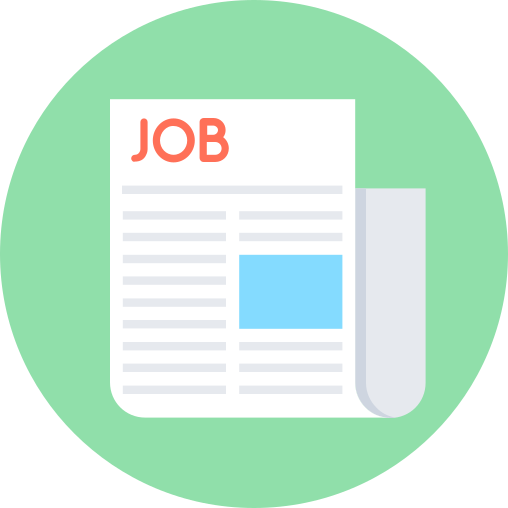

Työkokemus 
Laatuinsinööri
Syyskuu 2022 – Nykyinen
Purso-Tools Oy
- Vastaan koneistettujen kappaleiden laadunvalvonnasta ja mittausten suorittamisesta koordinaattimittauskoneella (CMM), varmistaen tuotteiden spesifikaatioiden mukaisuuden
- Osallistun laadunvalvonnan prosessien ylläpitoon ja kehittämiseen, pyrkien prosessien tehokkuuden parantamiseen.
- Laadin yksityiskohtaisia mittausraportteja ja viestin teknisiä tietoja selkeästi eri sidosryhmille, edistäen läpinäkyvyyttä ja ymmärrystä prosesseista.
- Dokumentoin laatutapahtumia, laadin mittapöytäkirjoja ja yksityiskohtaisia työohjeita.
- Suoritan pienten mittalaitteiden kalibrointeja ja ylläpidän kalibrointijärjestelmää.
Tutkimusapulainen
Huhtikuu 2020 – Elokuu 2022
Tampereen yliopisto
- Olin mukana kehittämässä ja toteuttamassa robotiikkaan liittyviä koulutusmateriaaleja käyttäen ROS-järjestelmää, edistäen teknologian soveltamista opetuksessa.
- Hoidin kurssi-ilmoittautumiset, yhteydenpidon kurssilaisiin sekä ROS-kurssien yleisiä asioita.
- Suoritin laajan kirjallisuustutkimuksen ja loin verkkosivut Linux Jekyllin avulla Rokokoo Selvitys ROS-robottiekosysteemistä. Osallistuin koulutusseminaarien järjestämiseen, vahvistaen vuorovaikutus- ja esitystaitoja.
- Suoritin haastatteluiden litterointeja.
- Sain tunnustusta itsenäisestä ja soveltavasta työskentelystä, joka tuki yliopiston koulutusohjelmien kehitystä.
Projektityöntekijä
Syyskuu 2017 – Joulukuu 2019
Satakunnan ammattikorkeakoulu
- Vastasin 3D-tulostusvastaavana tulostimien kokoamisesta, huollosta ja materiaalivarastosta, parantaen laitteiden käyttövarmuutta ja tehokkuutta.
- Suoritin kirjallisuustutkimuksia, joista sain kiitosta erinomaisesta projektidokumentaatiosta ja teknologian hallinnasta.
Linja-autonkuljettaja
Syyskuu 2013 – Joulukuu 2015
Satakunnan Liikenne Oy
- Ajoin reittiliikennettä välillä Turku–Pori–Vaasa sekä Pori– Rauma, varmistaen matkustajien turvallisuuden ja mukavuuden.
- Työhön kuului myös matkahuollon tehtävät ja asiakaspalvelu.
- Tehtävä vaati hyviä ihmissuhdetaitoja ja nopeaa päätöksentekokykyä.
- Sain erittäin positiivista palautetta hyvästä asiakaspalvelusta ja matkustusmukavuudesta.
Pelisaliasiakaspalvelija
Helmikuu 1997 – Tammikuu 2009
Raha-automaattiyhdistys (RAY)
- Toimin pelisaliasiakaspalvelijana, ja tehtäviini kuuluivat pelinhoito, automaattien pienet huollot sekä rahastukset ja kassatehtävät.
- Työ oli vaativaa asiakaspalvelutyötä, joka edellytti tarkkuutta ja huolellisuutta.
- Sain positiivista palautetta asiakaspalvelutaidoistani ja kyvystäni ratkaista ongelmatilanteita tehokkaasti.